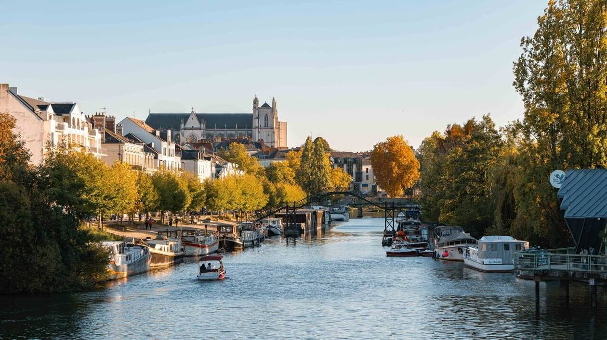

Workshop à Nantes : analyse semiclassique le long de la Loire
25-27 août 2026, Nantes, France
Organized by Yann Chaubet, Joe Viola and Gabriel Rivière.

Confirmed speakers
- Martin Averseng (Angers)
- Marianne Curely (Angers)
- Emma Grugier (Orléans)
- Maxime Ingremeau (Grenoble)
- Malo Jézéquel (Brest)
- Julien Lechaux (Nantes)
- Julien Sabin (Rennes)
- Santiago Verdasco Ramos (Universidad Politécnica de Madrid)